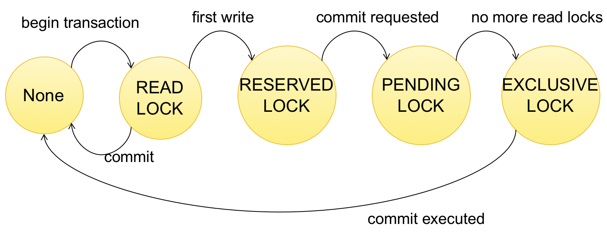

<!doctype html><html><head><meta charset='utf-8'>
    <link rel="stylesheet" href="https://cdnjs.cloudflare.com/ajax/libs/github-markdown-css/2.4.1/github-markdown.min.css">
    <link rel="stylesheet" href="https://cdnjs.cloudflare.com/ajax/libs/highlight.js/9.11.0/styles/default.min.css">
    <link rel="stylesheet" href="https://cdnjs.cloudflare.com/ajax/libs/KaTeX/0.8.3/katex.min.css">
    <link rel="stylesheet" href="https://gitcdn.xyz/repo/goessner/mdmath/master/css/texmath.css">
    <link rel="stylesheet" href="https://gitcdn.xyz/repo/goessner/mdmath/master/css/vscode-texmath.css">
    
    </head><body class="markdown-body">
    <h1 data-line="0" class="code-line" id="cse-344-final-review">CSE 344 Final Review</h1>
    <ul>
    <li data-line="2" class="code-line">
    <p data-line="2" class="code-line">Databases</p>
    <ul>
    <li data-line="4" class="code-line">Database: Collection of files storing <b>related data</b>.</li>
    <li data-line="5" class="code-line">Database Management System: an application program that allows us to nmanage efficiently the collection of data files.</li>
    <li data-line="6" class="code-line">Responsibility of DBMS:
    <ul>
    <li data-line="7" class="code-line">Data storage and manipulation</li>
    <li data-line="8" class="code-line">Black box throught</li>
    <li data-line="9" class="code-line">Physical data independence</li>
    </ul>
    </li>
    </ul>
    </li>
    <li data-line="11" class="code-line">
    <p data-line="11" class="code-line">Relational Databases</p>
    <ul>
    <li data-line="13" class="code-line">
    <p data-line="13" class="code-line">Motivation: avoid singular/flat files</p>
    </li>
    <li data-line="14" class="code-line">
    <p data-line="14" class="code-line">Data Model: <b>Mathematical/Conceptual</b> way for decribling the data</p>
    <ul>
    <li data-line="15" class="code-line">Schemas and keys</li>
    <li data-line="16" class="code-line">Record and attributes</li>
    <li data-line="17" class="code-line">Attribute types/typing</li>
    </ul>
    <p data-line="19" class="code-line">Three elements of data models:</p>
    <ul>
    <li data-line="20" class="code-line">Instance (actual data)</li>
    <li data-line="21" class="code-line">Schema (what data being stored)</li>
    <li data-line="22" class="code-line">Query language (how to retrieve qnd manipulate data)</li>
    </ul>
    </li>
    <li data-line="24" class="code-line">
    <p data-line="24" class="code-line">Keys: one (or more) attributes that <b>uniquely identify</b> a record</p>
    <ul>
    <li data-line="25" class="code-line">When multiple keys, we can choose one key as <b>primary key</b>.</li>
    </ul>
    </li>
    <li data-line="26" class="code-line">
    <p data-line="26" class="code-line">Foreign keys: attributes whose value is a key of a record in some other relation.</p>
    </li>
    <li data-line="28" class="code-line">
    <p data-line="28" class="code-line">SQL Structure:</p>
    <ul>
    <li data-line="29" class="code-line">
    <p data-line="29" class="code-line">Flat tables:</p>
    <ul>
    <li data-line="30" class="code-line">First normal form</li>
    <li data-line="31" class="code-line">Crosswalks and joins</li>
    <li data-line="32" class="code-line">Breaking up data into multiple relations</li>
    </ul>
    <p data-line="34" class="code-line">Tables are <b>not ordered</b>, <b>flat</b>, and has <b>physical data independence</b> (do not prescribe how they are implemented/stored on disk).</p>
    </li>
    <li data-line="36" class="code-line">
    <p data-line="36" class="code-line">Code:</p>
    <ul>
    <li data-line="37" class="code-line"><code>create</code> statements: declaring <b>types</b> and <b>keys</b>.</li>
    <li data-line="38" class="code-line"><code>insert</code>/<code>delete</code> statements</li>
    <li data-line="39" class="code-line"><code>update</code></li>
    <li data-line="40" class="code-line"><code>drop</code> table</li>
    </ul>
    </li>
    <li data-line="42" class="code-line">
    <p data-line="42" class="code-line"><code><b>DISTINCT</b></code>: return unique elements<br />
    <b>Projection</b>: function which selects a subset of the attributes</p>
    </li>
    <li data-line="45" class="code-line">
    <p data-line="45" class="code-line">Inner vs. Outer Joining</p>
    <ul>
    <li data-line="46" class="code-line"><b>inner joining</b>: each row must come from both tables</li>
    <li data-line="47" class="code-line"><b>outer joining</b>: include rows from only one of the two tables</li>
    <li data-line="48" class="code-line"><code>tableA (left/right/full) outer join tableB</code>:
    <ul>
    <li data-line="49" class="code-line">Left outer join: includes tuples from <code>tableA</code> even if no match</li>
    <li data-line="50" class="code-line">Right outer join: includes tuples from <code>tableB</code> even if no match</li>
    <li data-line="51" class="code-line">Full outer join: includes tuples from both <code>tableA</code> and <code>tableB</code> even if no match</li>
    </ul>
    </li>
    </ul>
    </li>
    <li data-line="53" class="code-line">
    <p data-line="53" class="code-line">Nested loop semantics</p>
    <ul>
    <li data-line="54" class="code-line">Cross-join multiple tables with selection</li>
    </ul>
    </li>
    <li data-line="56" class="code-line">
    <p data-line="56" class="code-line">Self joins</p>
    <ul>
    <li data-line="57" class="code-line">includes one table multiple times</li>
    </ul>
    </li>
    <li data-line="59" class="code-line">
    <p data-line="59" class="code-line">Aggregation:</p>
    <ul>
    <li data-line="60" class="code-line">Everything in <code>SELECT</code> must be either a <b>GROUP-BY</b> attribute, ot an aggregate.</li>
    </ul>
    </li>
    <li data-line="62" class="code-line">
    <p data-line="62" class="code-line"><code>WHERE</code> vs. <code>HAVING</code>:</p>
    <ul>
    <li data-line="63" class="code-line"><code>WHERE</code> can contain any condition on attributes in <code>FROM</code> clause.
    <ul>
    <li data-line="64" class="code-line">Applied to individual rows.</li>
    <li data-line="65" class="code-line">No aggregate.</li>
    </ul>
    </li>
    <li data-line="66" class="code-line"><code>HAVING</code> can contain any condition on aggregate expressions and any group-by keys.
    <ul>
    <li data-line="67" class="code-line">Entire group is returned, or removed.</li>
    </ul>
    </li>
    </ul>
    </li>
    <li data-line="69" class="code-line">
    <p data-line="69" class="code-line">Executing in order of: <b>FWGHOS</b></p>
    </li>
    <li data-line="71" class="code-line">
    <p data-line="71" class="code-line">Subqueries:</p>
    <ul>
    <li data-line="72" class="code-line">In <code>SELECT</code>: single attribute projection</li>
    <li data-line="73" class="code-line">In <code>FROM</code>: use <code>AS</code> and <code>WITH AS</code></li>
    <li data-line="74" class="code-line">In <code>WHERE</code>: use <b>existential quantifiers</b> (<code>EXISTS</code>, <code>IN</code>, <code>ANY</code>, <code>ALL</code>)</li>
    <li data-line="75" class="code-line"><b>Correlated</b> subquery: depends on outside query.</li>
    <li data-line="76" class="code-line">Finding Witness (the product with max price): compute aggregate in subquery.</li>
    </ul>
    </li>
    <li data-line="78" class="code-line">
    <p data-line="78" class="code-line">Monotonicity:</p>
    <ul>
    <li data-line="79" class="code-line">A query is <b>monotone</b> if whenever we add tuples to one or more input tables, the answer to the query will not lose any of the tuples.</li>
    <li data-line="80" class="code-line">If Q is a <code>SELECT-FROM-WHERE</code> query that <b>does not</b> involve any subqueries, Q <b>is</b> monotone.</li>
    <li data-line="81" class="code-line">Queries with <b>universal quantifiers</b>(all) or <b>negation</b> must be nested.</li>
    </ul>
    </li>
    </ul>
    </li>
    <li data-line="83" class="code-line">
    <p data-line="83" class="code-line">Relational Algebra:</p>
    <ul>
    <li data-line="84" class="code-line">
    <p data-line="84" class="code-line">Set/Bag semantics: differs on allowing/disallowing duplicates in tuples, also referred as &quot;Standard&quot;/&quot;Extended&quot; Relational Algebra</p>
    </li>
    <li data-line="86" class="code-line">
    <p data-line="86" class="code-line">Operators:</p>
    <ul>
    <li data-line="87" class="code-line">Union <eq><span class="katex"><span class="katex-mathml"><math><semantics><mrow><mo>∪</mo></mrow><annotation encoding="application/x-tex">\cup</annotation></semantics></math></span><span class="katex-html" aria-hidden="true"><span class="strut" style="height:0.55556em;"></span><span class="strut bottom" style="height:0.55556em;vertical-align:0em;"></span><span class="base"><span class="mord">∪</span></span></span></span></eq>, intersection <eq><span class="katex"><span class="katex-mathml"><math><semantics><mrow><mo>∩</mo></mrow><annotation encoding="application/x-tex">\cap</annotation></semantics></math></span><span class="katex-html" aria-hidden="true"><span class="strut" style="height:0.55556em;"></span><span class="strut bottom" style="height:0.55556em;vertical-align:0em;"></span><span class="base"><span class="mord">∩</span></span></span></span></eq>, difference <eq><span class="katex"><span class="katex-mathml"><math><semantics><mrow><mo>−</mo></mrow><annotation encoding="application/x-tex">-</annotation></semantics></math></span><span class="katex-html" aria-hidden="true"><span class="strut" style="height:0.58333em;"></span><span class="strut bottom" style="height:0.66666em;vertical-align:-0.08333em;"></span><span class="base"><span class="mord">−</span></span></span></span></eq></li>
    <li data-line="88" class="code-line">selection <eq><span class="katex"><span class="katex-mathml"><math><semantics><mrow><mi>σ</mi></mrow><annotation encoding="application/x-tex">\sigma</annotation></semantics></math></span><span class="katex-html" aria-hidden="true"><span class="strut" style="height:0.43056em;"></span><span class="strut bottom" style="height:0.43056em;vertical-align:0em;"></span><span class="base"><span class="mord mathit" style="margin-right:0.03588em;">σ</span></span></span></span></eq></li>
    <li data-line="89" class="code-line">projection <eq><span class="katex"><span class="katex-mathml"><math><semantics><mrow><mi>π</mi></mrow><annotation encoding="application/x-tex">\pi</annotation></semantics></math></span><span class="katex-html" aria-hidden="true"><span class="strut" style="height:0.43056em;"></span><span class="strut bottom" style="height:0.43056em;vertical-align:0em;"></span><span class="base"><span class="mord mathit" style="margin-right:0.03588em;">π</span></span></span></span></eq></li>
    <li data-line="90" class="code-line">Cartesian product <eq><span class="katex"><span class="katex-mathml"><math><semantics><mrow><mo>×</mo></mrow><annotation encoding="application/x-tex">\times</annotation></semantics></math></span><span class="katex-html" aria-hidden="true"><span class="strut" style="height:0.58333em;"></span><span class="strut bottom" style="height:0.66666em;vertical-align:-0.08333em;"></span><span class="base"><span class="mord">×</span></span></span></span></eq>, join <eq><span class="katex"><span class="katex-mathml"><math><semantics><mrow><mo>⋈</mo></mrow><annotation encoding="application/x-tex">\bowtie</annotation></semantics></math></span><span class="katex-html" aria-hidden="true"><span class="strut" style="height:0.505em;"></span><span class="strut bottom" style="height:0.51em;vertical-align:-0.005em;"></span><span class="base"><span class="mrel">⋈</span></span></span></span></eq></li>
    <li data-line="91" class="code-line">Rename <eq><span class="katex"><span class="katex-mathml"><math><semantics><mrow><mi>ρ</mi></mrow><annotation encoding="application/x-tex">\rho</annotation></semantics></math></span><span class="katex-html" aria-hidden="true"><span class="strut" style="height:0.43056em;"></span><span class="strut bottom" style="height:0.625em;vertical-align:-0.19444em;"></span><span class="base"><span class="mord mathit">ρ</span></span></span></span></eq></li>
    <li data-line="92" class="code-line">Duplicate elimination <eq><span class="katex"><span class="katex-mathml"><math><semantics><mrow><mi>δ</mi></mrow><annotation encoding="application/x-tex">\delta</annotation></semantics></math></span><span class="katex-html" aria-hidden="true"><span class="strut" style="height:0.69444em;"></span><span class="strut bottom" style="height:0.69444em;vertical-align:0em;"></span><span class="base"><span class="mord mathit" style="margin-right:0.03785em;">δ</span></span></span></span></eq></li>
    <li data-line="93" class="code-line">Grouping and aggregation <eq><span class="katex"><span class="katex-mathml"><math><semantics><mrow><mi>γ</mi></mrow><annotation encoding="application/x-tex">\gamma</annotation></semantics></math></span><span class="katex-html" aria-hidden="true"><span class="strut" style="height:0.43056em;"></span><span class="strut bottom" style="height:0.625em;vertical-align:-0.19444em;"></span><span class="base"><span class="mord mathit" style="margin-right:0.05556em;">γ</span></span></span></span></eq></li>
    <li data-line="94" class="code-line">sorting <eq><span class="katex"><span class="katex-mathml"><math><semantics><mrow><mi>τ</mi></mrow><annotation encoding="application/x-tex">\tau</annotation></semantics></math></span><span class="katex-html" aria-hidden="true"><span class="strut" style="height:0.43056em;"></span><span class="strut bottom" style="height:0.43056em;vertical-align:0em;"></span><span class="base"><span class="mord mathit" style="margin-right:0.1132em;">τ</span></span></span></span></eq></li>
    </ul>
    <p data-line="96" class="code-line">All operators take 1 or more relations as input and return another relation.</p>
    <p data-line="98" class="code-line">Join in R.A.:</p>
    <ul>
    <li data-line="99" class="code-line"><b>Theta-join</b>: <eq><span class="katex"><span class="katex-mathml"><math><semantics><mrow><mi>R</mi><msub><mo>⋈</mo><mi>θ</mi></msub><mi>S</mi><mo>=</mo><msub><mi>σ</mi><mi>θ</mi></msub><mo>(</mo><mi>R</mi><mo>×</mo><mi>S</mi><mo>)</mo></mrow><annotation encoding="application/x-tex">R \bowtie_{\theta} S = \sigma_{\theta} (R \times S)</annotation></semantics></math></span><span class="katex-html" aria-hidden="true"><span class="strut" style="height:0.75em;"></span><span class="strut bottom" style="height:1em;vertical-align:-0.25em;"></span><span class="base"><span class="mord mathit" style="margin-right:0.00773em;">R</span><span class="mrel"><span class="mrel">⋈</span><span class="msupsub"><span class="vlist-t vlist-t2"><span class="vlist-r"><span class="vlist" style="height:0.33610799999999996em;"><span style="top:-2.5500000000000003em;margin-left:0em;margin-right:0.05em;"><span class="pstrut" style="height:2.7em;"></span><span class="sizing reset-size6 size3 mtight"><span class="mord mtight"><span class="mord mathit mtight" style="margin-right:0.02778em;">θ</span></span></span></span></span><span class="vlist-s">​</span></span><span class="vlist-r"><span class="vlist" style="height:0.15em;"></span></span></span></span></span><span class="mord mathit" style="margin-right:0.05764em;">S</span><span class="mrel">=</span><span class="mord"><span class="mord mathit" style="margin-right:0.03588em;">σ</span><span class="msupsub"><span class="vlist-t vlist-t2"><span class="vlist-r"><span class="vlist" style="height:0.33610799999999996em;"><span style="top:-2.5500000000000003em;margin-left:-0.03588em;margin-right:0.05em;"><span class="pstrut" style="height:2.7em;"></span><span class="sizing reset-size6 size3 mtight"><span class="mord mtight"><span class="mord mathit mtight" style="margin-right:0.02778em;">θ</span></span></span></span></span><span class="vlist-s">​</span></span><span class="vlist-r"><span class="vlist" style="height:0.15em;"></span></span></span></span></span><span class="mopen">(</span><span class="mord mathit" style="margin-right:0.00773em;">R</span><span class="mbin">×</span><span class="mord mathit" style="margin-right:0.05764em;">S</span><span class="mclose">)</span></span></span></span></eq></li>
    <li data-line="100" class="code-line"><b>Equijoin</b>: Theta-joins which join condition <eq><span class="katex"><span class="katex-mathml"><math><semantics><mrow><mi>θ</mi></mrow><annotation encoding="application/x-tex">\theta</annotation></semantics></math></span><span class="katex-html" aria-hidden="true"><span class="strut" style="height:0.69444em;"></span><span class="strut bottom" style="height:0.69444em;vertical-align:0em;"></span><span class="base"><span class="mord mathit" style="margin-right:0.02778em;">θ</span></span></span></span></eq> only involves equilities.</li>
    <li data-line="101" class="code-line"><b>Natural Join</b>: <eq><span class="katex"><span class="katex-mathml"><math><semantics><mrow><mi>R</mi><mo>⋈</mo><mi>S</mi><mo>=</mo><msub><mi>π</mi><mi>A</mi></msub><mo>(</mo><msub><mi>σ</mi><mi>θ</mi></msub><mo>(</mo><mi>R</mi><mo>×</mo><mi>S</mi><mo>)</mo><mo>)</mo></mrow><annotation encoding="application/x-tex">R \bowtie S = \pi_A(\sigma_\theta(R \times S))</annotation></semantics></math></span><span class="katex-html" aria-hidden="true"><span class="strut" style="height:0.75em;"></span><span class="strut bottom" style="height:1em;vertical-align:-0.25em;"></span><span class="base"><span class="mord mathit" style="margin-right:0.00773em;">R</span><span class="mrel">⋈</span><span class="mord mathit" style="margin-right:0.05764em;">S</span><span class="mrel">=</span><span class="mord"><span class="mord mathit" style="margin-right:0.03588em;">π</span><span class="msupsub"><span class="vlist-t vlist-t2"><span class="vlist-r"><span class="vlist" style="height:0.32833099999999993em;"><span style="top:-2.5500000000000003em;margin-left:-0.03588em;margin-right:0.05em;"><span class="pstrut" style="height:2.7em;"></span><span class="sizing reset-size6 size3 mtight"><span class="mord mathit mtight">A</span></span></span></span><span class="vlist-s">​</span></span><span class="vlist-r"><span class="vlist" style="height:0.15em;"></span></span></span></span></span><span class="mopen">(</span><span class="mord"><span class="mord mathit" style="margin-right:0.03588em;">σ</span><span class="msupsub"><span class="vlist-t vlist-t2"><span class="vlist-r"><span class="vlist" style="height:0.33610799999999996em;"><span style="top:-2.5500000000000003em;margin-left:-0.03588em;margin-right:0.05em;"><span class="pstrut" style="height:2.7em;"></span><span class="sizing reset-size6 size3 mtight"><span class="mord mathit mtight" style="margin-right:0.02778em;">θ</span></span></span></span><span class="vlist-s">​</span></span><span class="vlist-r"><span class="vlist" style="height:0.15em;"></span></span></span></span></span><span class="mopen">(</span><span class="mord mathit" style="margin-right:0.00773em;">R</span><span class="mbin">×</span><span class="mord mathit" style="margin-right:0.05764em;">S</span><span class="mclose">)</span><span class="mclose">)</span></span></span></span></eq></li>
    </ul>
    </li>
    <li data-line="103" class="code-line">
    <p data-line="103" class="code-line">Relational Algebra is <b>equally expressive</b> with SQL.</p>
    </li>
    </ul>
    </li>
    <li data-line="105" class="code-line">
    <p data-line="105" class="code-line">Datalog:</p>
    <ul>
    <li data-line="106" class="code-line">For Queries that cannot be defined in RA (recursive queries)</li>
    <li data-line="107" class="code-line">Terminology:
    <ul>
    <li data-line="108" class="code-line">Facts: tuples in database</li>
    <li data-line="109" class="code-line">Rules: queries</li>
    <li data-line="110" class="code-line">Extensional Predicates: predicates defined in database itself</li>
    <li data-line="111" class="code-line">Intensional Predicates: self-defined predicates</li>
    <li data-line="112" class="code-line">Head: the intensional predicates to be defined</li>
    <li data-line="113" class="code-line">Body: rule for each head (made with atoms/relational predicates)</li>
    <li data-line="114" class="code-line">head variables / existential variables</li>
    </ul>
    </li>
    <li data-line="115" class="code-line">Fixpoint semantics: start with empty relations, repeat until <eq><span class="katex"><span class="katex-mathml"><math><semantics><mrow><mi>I</mi><mi>D</mi><msub><mi>B</mi><mi>t</mi></msub><mo>=</mo><mi>I</mi><mi>D</mi><msub><mi>B</mi><mrow><mi>t</mi><mo>+</mo><mn>1</mn></mrow></msub></mrow><annotation encoding="application/x-tex">IDB_t = IDB_{t + 1}</annotation></semantics></math></span><span class="katex-html" aria-hidden="true"><span class="strut" style="height:0.68333em;"></span><span class="strut bottom" style="height:0.891661em;vertical-align:-0.208331em;"></span><span class="base"><span class="mord mathit" style="margin-right:0.07847em;">I</span><span class="mord mathit" style="margin-right:0.02778em;">D</span><span class="mord"><span class="mord mathit" style="margin-right:0.05017em;">B</span><span class="msupsub"><span class="vlist-t vlist-t2"><span class="vlist-r"><span class="vlist" style="height:0.2805559999999999em;"><span style="top:-2.5500000000000003em;margin-left:-0.05017em;margin-right:0.05em;"><span class="pstrut" style="height:2.7em;"></span><span class="sizing reset-size6 size3 mtight"><span class="mord mathit mtight">t</span></span></span></span><span class="vlist-s">​</span></span><span class="vlist-r"><span class="vlist" style="height:0.15em;"></span></span></span></span></span><span class="mrel">=</span><span class="mord mathit" style="margin-right:0.07847em;">I</span><span class="mord mathit" style="margin-right:0.02778em;">D</span><span class="mord"><span class="mord mathit" style="margin-right:0.05017em;">B</span><span class="msupsub"><span class="vlist-t vlist-t2"><span class="vlist-r"><span class="vlist" style="height:0.301108em;"><span style="top:-2.5500000000000003em;margin-left:-0.05017em;margin-right:0.05em;"><span class="pstrut" style="height:2.7em;"></span><span class="sizing reset-size6 size3 mtight"><span class="mord mtight"><span class="mord mathit mtight">t</span><span class="mbin mtight">+</span><span class="mord mathrm mtight">1</span></span></span></span></span><span class="vlist-s">​</span></span><span class="vlist-r"><span class="vlist" style="height:0.208331em;"></span></span></span></span></span></span></span></span></eq>.
    <ul>
    <li data-line="116" class="code-line">A datalog program without functions (+, *, ...) always terminates in polynomial time.</li>
    </ul>
    </li>
    <li data-line="117" class="code-line">Minimal model semantics: returns the smallest IDB such that all vars in EDB satisfies rule defined for this IDB (recursively too).</li>
    <li data-line="118" class="code-line">Linear:
    <ul>
    <li data-line="119" class="code-line">Right-linear: <code>T(x, y) :- R(x, z), T(z, y)</code></li>
    <li data-line="120" class="code-line">Left-linear: <code>T(x, y) :- T(x, z), R(z, y)</code></li>
    <li data-line="121" class="code-line">Non-linear: <code>T(x, y) :- T(x, z), T(z, y)</code></li>
    </ul>
    </li>
    <li data-line="122" class="code-line">Writing Rules:
    <ul>
    <li data-line="123" class="code-line">Safe: if every variable appears in some positive relational atom</li>
    </ul>
    </li>
    </ul>
    </li>
    </ul>
    </li>
    <li data-line="125" class="code-line">
    <p data-line="125" class="code-line">Semi-structured Data</p>
    <ul>
    <li data-line="127" class="code-line">
    <p data-line="127" class="code-line"><b>Transactional Data</b>: Frequent read, simple update<br />
    <b>Analytical Data</b>: Decision support, multiple joins &amp; group bys</p>
    <p data-line="130" class="code-line">OLTP (online transaction processing): simple look-up, many updates, consistency.<br />
    OLAP (online analytical processing): Decision Support</p>
    </li>
    <li data-line="132" class="code-line">
    <p data-line="132" class="code-line"><b>Partitioning</b>: Store data partitioned on multiple servers, easy to write, hard to read (Good for transactional)<br />
    <b>Dupplication</b>: Duplicate data on multiple files, hard to write, easy to read (Good for analytical)</p>
    </li>
    <li data-line="134" class="code-line">
    <p data-line="134" class="code-line"><b>JSON</b>: semi-stuctured data model</p>
    <ul>
    <li data-line="135" class="code-line"><code>{}</code> holds objects, <code>[a,b,...,x]</code> is an array.</li>
    <li data-line="136" class="code-line">Duplicate keys are allowed by standard, but not by mant implementations.</li>
    <li data-line="137" class="code-line">Allows <u>null values</u>, <u>duplicate attributes</u>, and <u>nested collections.</u></li>
    </ul>
    </li>
    <li data-line="138" class="code-line">
    <p data-line="138" class="code-line"><b>SQL++</b>:</p>
    <ul>
    <li data-line="139" class="code-line">Dataverse: is a database
    <ul>
    <li data-line="140" class="code-line"><code>USE</code> + dataverse name</li>
    </ul>
    </li>
    <li data-line="141" class="code-line">Type: defines a schema of a collection
    <ul>
    <li data-line="142" class="code-line">Lists all required fields, <code>?</code> for optional fields.</li>
    <li data-line="143" class="code-line"><code>OPEN</code> permits other field, while <code>CLOSED</code> doesn't.</li>
    <li data-line="144" class="code-line"><code>PRIMART KET mykey AUTOGENERATED</code> to autogenerate a unique id for each entry.</li>
    </ul>
    </li>
    </ul>
    </li>
    <li data-line="145" class="code-line">
    <p data-line="145" class="code-line">indices:</p>
    <ul>
    <li data-line="146" class="code-line">Three type of indices available:
    <ul>
    <li data-line="147" class="code-line"><code>BTREE</code>: for quality and range queries.</li>
    <li data-line="148" class="code-line"><code>RTREE</code>: for two-dimensional range queries:<br />
    for example: <code>WHERE x &gt; 20 AND x &lt; 30 AND y &gt; 20 AND y &lt; 30</code></li>
    <li data-line="150" class="code-line"><code>KEYWORD</code>: for substring search.</li>
    </ul>
    </li>
    <li data-line="151" class="code-line"><b>CANNOT</b> index inside a nested collection.</li>
    <li data-line="152" class="code-line">Syntax: <code>CREATE INDEX countryID ON country(carCode) TYPE BTREE</code></li>
    </ul>
    </li>
    <li data-line="153" class="code-line">
    <p data-line="153" class="code-line"><b>Heterogeneous collections</b>: Same attribute, but in some object is array, in some object is not.</p>
    <ul>
    <li data-line="154" class="code-line">Solution: Use <code>(CASE ... WHEN...THEN...ELSE...) u</code>, and <code>is_array()</code> helper function.</li>
    </ul>
    </li>
    <li data-line="155" class="code-line">
    <p data-line="155" class="code-line"><code>UNNEST</code>: distribute each element in this array to the rest of the row.</p>
    </li>
    <li data-line="156" class="code-line">
    <p data-line="156" class="code-line">Multi-value join: split an array to &quot;unnest&quot; with <code>split(y.'country', &quot; &quot;)</code>.</p>
    </li>
    </ul>
    </li>
    <li data-line="158" class="code-line">
    <p data-line="158" class="code-line">Physical Plan:</p>
    <ul>
    <li data-line="160" class="code-line">
    <p data-line="160" class="code-line">Overall execution of a SQL query:<br/>
    Parse SQL -&gt; Select logical plan (Relational ALgebra) -&gt; Select physical Plan -&gt; execute.<br />
    Physical Plans: Choose an effective implementation for a RA operator.</p>
    </li>
    <li data-line="164" class="code-line">
    <p data-line="164" class="code-line">Basic Physical Operator: Join</p>
    <ul>
    <li data-line="165" class="code-line">Nested Loop Join: <eq><span class="katex"><span class="katex-mathml"><math><semantics><mrow><mi>O</mi><mo>(</mo><msup><mi>n</mi><mn>2</mn></msup><mo>)</mo></mrow><annotation encoding="application/x-tex">O(n^2)</annotation></semantics></math></span><span class="katex-html" aria-hidden="true"><span class="strut" style="height:0.8141079999999999em;"></span><span class="strut bottom" style="height:1.064108em;vertical-align:-0.25em;"></span><span class="base"><span class="mord mathit" style="margin-right:0.02778em;">O</span><span class="mopen">(</span><span class="mord"><span class="mord mathit">n</span><span class="msupsub"><span class="vlist-t"><span class="vlist-r"><span class="vlist" style="height:0.8141079999999999em;"><span style="top:-3.063em;margin-right:0.05em;"><span class="pstrut" style="height:2.7em;"></span><span class="sizing reset-size6 size3 mtight"><span class="mord mathrm mtight">2</span></span></span></span></span></span></span></span><span class="mclose">)</span></span></span></span></eq></li>
    <li data-line="166" class="code-line">Merge Join: <eq><span class="katex"><span class="katex-mathml"><math><semantics><mrow><mi>O</mi><mo>(</mo><mi>n</mi><mi>l</mi><mi>o</mi><mi>g</mi><mo>(</mo><mi>n</mi><mo>)</mo><mo>)</mo></mrow><annotation encoding="application/x-tex">O(n log(n))</annotation></semantics></math></span><span class="katex-html" aria-hidden="true"><span class="strut" style="height:0.75em;"></span><span class="strut bottom" style="height:1em;vertical-align:-0.25em;"></span><span class="base"><span class="mord mathit" style="margin-right:0.02778em;">O</span><span class="mopen">(</span><span class="mord mathit">n</span><span class="mord mathit" style="margin-right:0.01968em;">l</span><span class="mord mathit">o</span><span class="mord mathit" style="margin-right:0.03588em;">g</span><span class="mopen">(</span><span class="mord mathit">n</span><span class="mclose">)</span><span class="mclose">)</span></span></span></span></eq></li>
    <li data-line="167" class="code-line">Hash Join: <eq><span class="katex"><span class="katex-mathml"><math><semantics><mrow><mi>O</mi><mo>(</mo><mi>n</mi><mo>)</mo></mrow><annotation encoding="application/x-tex">O(n)</annotation></semantics></math></span><span class="katex-html" aria-hidden="true"><span class="strut" style="height:0.75em;"></span><span class="strut bottom" style="height:1em;vertical-align:-0.25em;"></span><span class="base"><span class="mord mathit" style="margin-right:0.02778em;">O</span><span class="mopen">(</span><span class="mord mathit">n</span><span class="mclose">)</span></span></span></span></eq> to <eq><span class="katex"><span class="katex-mathml"><math><semantics><mrow><mi>O</mi><mo>(</mo><msup><mi>n</mi><mn>2</mn></msup><mo>)</mo></mrow><annotation encoding="application/x-tex">O(n^2)</annotation></semantics></math></span><span class="katex-html" aria-hidden="true"><span class="strut" style="height:0.8141079999999999em;"></span><span class="strut bottom" style="height:1.064108em;vertical-align:-0.25em;"></span><span class="base"><span class="mord mathit" style="margin-right:0.02778em;">O</span><span class="mopen">(</span><span class="mord"><span class="mord mathit">n</span><span class="msupsub"><span class="vlist-t"><span class="vlist-r"><span class="vlist" style="height:0.8141079999999999em;"><span style="top:-3.063em;margin-right:0.05em;"><span class="pstrut" style="height:2.7em;"></span><span class="sizing reset-size6 size3 mtight"><span class="mord mathrm mtight">2</span></span></span></span></span></span></span></span><span class="mclose">)</span></span></span></span></eq></li>
    </ul>
    </li>
    <li data-line="169" class="code-line">
    <p data-line="169" class="code-line">Physical Data Independence: Apps are insulated from how data is stored physically.</p>
    </li>
    <li data-line="171" class="code-line">
    <p data-line="171" class="code-line">Data Storage:</p>
    <ul>
    <li data-line="172" class="code-line">DBMS store data in files, each file is splitted into blocks, and each block contains serveral tuples.</li>
    <li data-line="173" class="code-line">Data file can be either a <u>Heap file</u> (unsorted), or <u>Sequencial file</u> (sorted according to some attribute/key).</li>
    <li data-line="174" class="code-line">Index: Additional file mapps from a search key (some attribute's value) to the actual tuple in memory. (<i>Could have many index for one table.</i>)
    <ul>
    <li data-line="175" class="code-line">Clustered index: records close in index is close in data</li>
    <li data-line="176" class="code-line">Unclustered index: records close in index may be far in data</li>
    <li data-line="177" class="code-line">Primary: Over attributes including primary key</li>
    <li data-line="178" class="code-line">Secondart: Otherwise.</li>
    </ul>
    </li>
    </ul>
    </li>
    <li data-line="180" class="code-line">
    <p data-line="180" class="code-line">Scanning a disk: Sequencial scan is much faster than random accessing the disk.</p>
    </li>
    <li data-line="182" class="code-line">
    <p data-line="182" class="code-line">Index should be selected on attributes which:</p>
    <ul>
    <li data-line="183" class="code-line">an exact match</li>
    <li data-line="184" class="code-line">a range match (clustered index works the best)</li>
    <li data-line="185" class="code-line">a join</li>
    </ul>
    <p data-line="187" class="code-line">On such key is needed. (solution to <b>index selection problem</b>).</p>
    </li>
    <li data-line="189" class="code-line">
    <p data-line="189" class="code-line">Cost Estimation:</p>
    <ul>
    <li data-line="191" class="code-line">
    <p data-line="191" class="code-line">Parameters for cost estimation: for some relation R,</p>
    <ul>
    <li data-line="192" class="code-line">B(R): number of blocks in R</li>
    <li data-line="193" class="code-line">T(R): number of tuples in R</li>
    <li data-line="194" class="code-line">V(R, a): number of distinct values of attribute a
    <ul>
    <li data-line="195" class="code-line">Note that when a is a key, V(R, a) = T(R); else, V(R, a) <eq><span class="katex"><span class="katex-mathml"><math><semantics><mrow><mo>≤</mo></mrow><annotation encoding="application/x-tex">\leq</annotation></semantics></math></span><span class="katex-html" aria-hidden="true"><span class="strut" style="height:0.63597em;"></span><span class="strut bottom" style="height:0.7719400000000001em;vertical-align:-0.13597em;"></span><span class="base"><span class="mrel">≤</span></span></span></span></eq> T(R)</li>
    </ul>
    </li>
    </ul>
    </li>
    <li data-line="197" class="code-line">
    <p data-line="197" class="code-line">Cost of:</p>
    <ul>
    <li data-line="198" class="code-line">Sequentially scan a table: B(R)</li>
    <li data-line="199" class="code-line">Index-based scanning:
    <ul>
    <li data-line="200" class="code-line">Clustered: f * B(R)</li>
    <li data-line="201" class="code-line">Unclustered: f * T(R)<br />
    [Note: f is usually 1/V(R, a), which a is the key that index is built on]</li>
    </ul>
    </li>
    </ul>
    </li>
    <li data-line="204" class="code-line">
    <p data-line="204" class="code-line">Join Cost:</p>
    <ul>
    <li data-line="205" class="code-line"><b>Hash Join</b>: Scan one table into memory and build hash table, scan in the other table and join.
    <ul>
    <li data-line="206" class="code-line">Overall cost: B(R) + B(S)</li>
    <li data-line="207" class="code-line">Should build hashTable on the relation with more distinct attributes.</li>
    </ul>
    </li>
    <li data-line="208" class="code-line"><b>Nested Loop Join</b>: Scan one table into memory, scan in the other and compare each tuple pair to determine if successfully joins.
    <ul>
    <li data-line="209" class="code-line">Overall cost: B(R) + T(R) * B(S)</li>
    </ul>
    </li>
    <li data-line="210" class="code-line"><b>Sort-merge Join</b>: Scan two tables and sort in memory, then merge-join them. (Not one-pass algorithm)
    <ul>
    <li data-line="211" class="code-line">Overall cost: B(R) + B(S)</li>
    </ul>
    </li>
    <li data-line="212" class="code-line"><b>Index Nested loop Join</b>: Assume S has an index page in memory. So iterate over R and fetch corresponding entries of S.
    <ul>
    <li data-line="213" class="code-line">Cost if S is clustered: B(R) + T(R) * (B(S) / V(S, a))</li>
    <li data-line="214" class="code-line">Cost if S is unclustered: B(R) + T(R) * (T(S) / V(S, a))</li>
    </ul>
    </li>
    </ul>
    </li>
    </ul>
    </li>
    </ul>
    </li>
    <li data-line="216" class="code-line">
    <p data-line="216" class="code-line">Parallel/Map-Reduce:</p>
    <ul>
    <li data-line="218" class="code-line">
    <p data-line="218" class="code-line">Speed up: More nodes(processors, computers), same data, more speed<br />
    Scale up: More nodes, more data, same speed<br /></p>
    </li>
    <li data-line="221" class="code-line">
    <p data-line="221" class="code-line">Shared-nothing: each machine has its own disk and memory. Easy to maintain and scale, but hard to administer and tune.</p>
    </li>
    <li data-line="223" class="code-line">
    <p data-line="223" class="code-line">Intra-operator parallelism:</p>
    <ul>
    <li data-line="224" class="code-line">Each operator is placed on multiple nodes.</li>
    <li data-line="225" class="code-line">Good for both transactional and analytical work.</li>
    </ul>
    </li>
    <li data-line="227" class="code-line">
    <p data-line="227" class="code-line">Horizontal Data Partinioning:</p>
    <ul>
    <li data-line="228" class="code-line">Block Partition: partition arbitarily with block alignment.</li>
    <li data-line="229" class="code-line">Hash Partition on some attribute</li>
    <li data-line="230" class="code-line">Range Partition: a tuple goes to some server if value falls in some range.</li>
    </ul>
    </li>
    <li data-line="232" class="code-line">
    <p data-line="232" class="code-line">Uniform Data/Skewed Data:</p>
    <ul>
    <li data-line="233" class="code-line">Uniform Data: Data is partitioned uniformly across servers.
    <ul>
    <li data-line="234" class="code-line">Block Partition will be unform.</li>
    </ul>
    </li>
    <li data-line="235" class="code-line">Skewed Data: Some server holds more data than other servers.
    <ul>
    <li data-line="236" class="code-line">Hash Partition/Range Partition on some attribute may cause this problem.</li>
    </ul>
    </li>
    </ul>
    </li>
    <li data-line="238" class="code-line">
    <p data-line="238" class="code-line">Shuffle &amp; Broadcast:</p>
    <ul>
    <li data-line="239" class="code-line">Shuffle Join: Reshuffle each table on the common attribute, and compute join locally.</li>
    <li data-line="240" class="code-line">Broadcast join: Reshuffle one table on the common attribute, join with another table, and broadcast the result.</li>
    </ul>
    </li>
    <li data-line="242" class="code-line">
    <p data-line="242" class="code-line">Map/Reduce framework:</p>
    <ul>
    <li data-line="243" class="code-line">Map: extract something you care about for each record.</li>
    <li data-line="244" class="code-line">Reduce: aggregate, summerize, filter, transform</li>
    <li data-line="245" class="code-line">Fault-tolerance: map writes to local disk, reduce reads from disk. If fails, the reduce task is restarted on another server, but slow.</li>
    <li data-line="246" class="code-line">Spark uses &quot;Resilient distributed datasets&quot; = main memory + linerage.</li>
    </ul>
    </li>
    <li data-line="248" class="code-line">
    <p data-line="248" class="code-line">Straggler: a machine takes unusual long to complete one of the last tasks.</p>
    <ul>
    <li data-line="249" class="code-line">Solution: pre-emptive back up execution of last few in-progress tasks.</li>
    </ul>
    </li>
    </ul>
    </li>
    <li data-line="251" class="code-line">
    <p data-line="251" class="code-line">Database design:</p>
    <ul>
    <li data-line="253" class="code-line">
    <p data-line="253" class="code-line">Conceptual model for database design:</p>
    <ul>
    <li data-line="254" class="code-line">Entity: an object
    <ul>
    <li data-line="255" class="code-line">Attribute: attributes of entity. Each entity set must have a key, which can be one attribute or serveral attributes.</li>
    </ul>
    </li>
    <li data-line="256" class="code-line">Relationship: how entities are related.</li>
    <li data-line="257" class="code-line">Weak entities: entities which key come from other classes which they are related</li>
    </ul>
    </li>
    <li data-line="259" class="code-line">
    <p data-line="259" class="code-line">Relationship between entities:</p>
    <ul>
    <li data-line="260" class="code-line"><b>One to one</b>: No seperate table</li>
    <li data-line="261" class="code-line"><b>One to many</b>: No seperate table</li>
    <li data-line="262" class="code-line"><b>Many to many</b>: Seperate table</li>
    </ul>
    </li>
    <li data-line="264" class="code-line">
    <p data-line="264" class="code-line">Integrity constraint motivation: a consition specified on a database schema which restricts the data that can be stored on any instance of the database.</p>
    <ul>
    <li data-line="265" class="code-line">Key Constraints: the key in each schema must uniquely identifies a person</li>
    <li data-line="266" class="code-line">single-value constraints: a person can only have one biological father</li>
    <li data-line="267" class="code-line">Referetial integrity constraints: if you work for a company, it must exist in the database.</li>
    <li data-line="268" class="code-line">Other constraints: value needs to be in legal range.</li>
    </ul>
    </li>
    <li data-line="270" class="code-line">
    <p data-line="270" class="code-line">Constrains in <code>SQL</code>:</p>
    <ul>
    <li data-line="271" class="code-line">Primary Key, Foreign Key
    <ul>
    <li data-line="272" class="code-line"><code>UNIQUE(name)</code> can be used to ensure <code>name</code> is unique (even if it is not primary key). There can be many unique.</li>
    <li data-line="273" class="code-line">Foreign key constraints: the referential integrity cnostraints. The referred column must be a key in another table.</li>
    </ul>
    </li>
    <li data-line="274" class="code-line">Attribute level constraints
    <ul>
    <li data-line="275" class="code-line"><code>NOT NULL</code></li>
    <li data-line="276" class="code-line"><code>CHECK</code> can check any condition</li>
    </ul>
    </li>
    <li data-line="277" class="code-line">Tuple-level constraints</li>
    <li data-line="278" class="code-line">Global constraints/Assertions</li>
    </ul>
    </li>
    <li data-line="280" class="code-line">
    <p data-line="280" class="code-line">Functional Dependencies: if one attribute implies another<br />
    Closure: everything that an attribute determine</p>
    <ul>
    <li data-line="282" class="code-line">If <eq><span class="katex"><span class="katex-mathml"><math><semantics><mrow><mi>A</mi><mo>→</mo><mi>B</mi></mrow><annotation encoding="application/x-tex">A \rightarrow B</annotation></semantics></math></span><span class="katex-html" aria-hidden="true"><span class="strut" style="height:0.68333em;"></span><span class="strut bottom" style="height:0.68333em;vertical-align:0em;"></span><span class="base"><span class="mord mathit">A</span><span class="mrel">→</span><span class="mord mathit" style="margin-right:0.05017em;">B</span></span></span></span></eq> and <eq><span class="katex"><span class="katex-mathml"><math><semantics><mrow><mi>B</mi><mo>→</mo><mi>C</mi></mrow><annotation encoding="application/x-tex">B \rightarrow C</annotation></semantics></math></span><span class="katex-html" aria-hidden="true"><span class="strut" style="height:0.68333em;"></span><span class="strut bottom" style="height:0.68333em;vertical-align:0em;"></span><span class="base"><span class="mord mathit" style="margin-right:0.05017em;">B</span><span class="mrel">→</span><span class="mord mathit" style="margin-right:0.07153em;">C</span></span></span></span></eq>, then <eq><span class="katex"><span class="katex-mathml"><math><semantics><mrow><mi>A</mi><mo>→</mo><mrow><mi>B</mi><mo separator="true">,</mo><mi>C</mi></mrow></mrow><annotation encoding="application/x-tex">A \rightarrow {B, C}</annotation></semantics></math></span><span class="katex-html" aria-hidden="true"><span class="strut" style="height:0.68333em;"></span><span class="strut bottom" style="height:0.8777699999999999em;vertical-align:-0.19444em;"></span><span class="base"><span class="mord mathit">A</span><span class="mrel">→</span><span class="mord"><span class="mord mathit" style="margin-right:0.05017em;">B</span><span class="mpunct">,</span><span class="mord mathit" style="margin-right:0.07153em;">C</span></span></span></span></span></eq>.</li>
    <li data-line="283" class="code-line">Formal notation: <eq><span class="katex"><span class="katex-mathml"><math><semantics><mrow><mo>{</mo><mi>A</mi><msup><mo>}</mo><mo>+</mo></msup><mo>=</mo><mo>{</mo><mi>A</mi><mo separator="true">,</mo><mi>B</mi><mo separator="true">,</mo><mi>C</mi><mo>}</mo></mrow><annotation encoding="application/x-tex">\{A\}^+ = \{A, B, C\}</annotation></semantics></math></span><span class="katex-html" aria-hidden="true"><span class="strut" style="height:0.771331em;"></span><span class="strut bottom" style="height:1.021331em;vertical-align:-0.25em;"></span><span class="base"><span class="mopen">{</span><span class="mord mathit">A</span><span class="mclose"><span class="mclose">}</span><span class="msupsub"><span class="vlist-t"><span class="vlist-r"><span class="vlist" style="height:0.771331em;"><span style="top:-3.063em;margin-right:0.05em;"><span class="pstrut" style="height:2.7em;"></span><span class="sizing reset-size6 size3 mtight"><span class="mbin mtight">+</span></span></span></span></span></span></span></span><span class="mrel">=</span><span class="mopen">{</span><span class="mord mathit">A</span><span class="mpunct">,</span><span class="mord mathit" style="margin-right:0.05017em;">B</span><span class="mpunct">,</span><span class="mord mathit" style="margin-right:0.07153em;">C</span><span class="mclose">}</span></span></span></span></eq></li>
    <li data-line="284" class="code-line">If one attribute determines all other attributes in the schema, then it is called <b>superkey</b></li>
    <li data-line="285" class="code-line">The smallest subset of attributes that does it is called the <b>minimal key</b> or just <b>key</b>.</li>
    </ul>
    <p data-line="287" class="code-line">Boyce-Codd Normal Form (BCNF): No bad functional dependencies.</p>
    <ul>
    <li data-line="288" class="code-line">For all attribute <eq><span class="katex"><span class="katex-mathml"><math><semantics><mrow><mi>X</mi></mrow><annotation encoding="application/x-tex">X</annotation></semantics></math></span><span class="katex-html" aria-hidden="true"><span class="strut" style="height:0.68333em;"></span><span class="strut bottom" style="height:0.68333em;vertical-align:0em;"></span><span class="base"><span class="mord mathit" style="margin-right:0.07847em;">X</span></span></span></span></eq>, either <eq><span class="katex"><span class="katex-mathml"><math><semantics><mrow><mo>{</mo><mi>X</mi><msup><mo>}</mo><mo>+</mo></msup><mo>=</mo><mo>{</mo><mi>X</mi><mo>}</mo></mrow><annotation encoding="application/x-tex">\{X\}^+ = \{X\}</annotation></semantics></math></span><span class="katex-html" aria-hidden="true"><span class="strut" style="height:0.771331em;"></span><span class="strut bottom" style="height:1.021331em;vertical-align:-0.25em;"></span><span class="base"><span class="mopen">{</span><span class="mord mathit" style="margin-right:0.07847em;">X</span><span class="mclose"><span class="mclose">}</span><span class="msupsub"><span class="vlist-t"><span class="vlist-r"><span class="vlist" style="height:0.771331em;"><span style="top:-3.063em;margin-right:0.05em;"><span class="pstrut" style="height:2.7em;"></span><span class="sizing reset-size6 size3 mtight"><span class="mbin mtight">+</span></span></span></span></span></span></span></span><span class="mrel">=</span><span class="mopen">{</span><span class="mord mathit" style="margin-right:0.07847em;">X</span><span class="mclose">}</span></span></span></span></eq> or <eq><span class="katex"><span class="katex-mathml"><math><semantics><mrow><mo>{</mo><mi>X</mi><msup><mo>}</mo><mo>+</mo></msup><mo>=</mo></mrow><annotation encoding="application/x-tex">\{X\}^+ =</annotation></semantics></math></span><span class="katex-html" aria-hidden="true"><span class="strut" style="height:0.771331em;"></span><span class="strut bottom" style="height:1.021331em;vertical-align:-0.25em;"></span><span class="base"><span class="mopen">{</span><span class="mord mathit" style="margin-right:0.07847em;">X</span><span class="mclose"><span class="mclose">}</span><span class="msupsub"><span class="vlist-t"><span class="vlist-r"><span class="vlist" style="height:0.771331em;"><span style="top:-3.063em;margin-right:0.05em;"><span class="pstrut" style="height:2.7em;"></span><span class="sizing reset-size6 size3 mtight"><span class="mbin mtight">+</span></span></span></span></span></span></span></span><span class="mrel">=</span></span></span></span></eq> all attributes.</li>
    <li data-line="289" class="code-line">Whenever <eq><span class="katex"><span class="katex-mathml"><math><semantics><mrow><mi>X</mi><mo>→</mo><mi>B</mi></mrow><annotation encoding="application/x-tex">X \rightarrow B</annotation></semantics></math></span><span class="katex-html" aria-hidden="true"><span class="strut" style="height:0.68333em;"></span><span class="strut bottom" style="height:0.68333em;vertical-align:0em;"></span><span class="base"><span class="mord mathit" style="margin-right:0.07847em;">X</span><span class="mrel">→</span><span class="mord mathit" style="margin-right:0.05017em;">B</span></span></span></span></eq> is a non-trival dependency, then <eq><span class="katex"><span class="katex-mathml"><math><semantics><mrow><mi>X</mi></mrow><annotation encoding="application/x-tex">X</annotation></semantics></math></span><span class="katex-html" aria-hidden="true"><span class="strut" style="height:0.68333em;"></span><span class="strut bottom" style="height:0.68333em;vertical-align:0em;"></span><span class="base"><span class="mord mathit" style="margin-right:0.07847em;">X</span></span></span></span></eq> is a superkey.</li>
    </ul>
    </li>
    </ul>
    </li>
    <li data-line="291" class="code-line">
    <p data-line="291" class="code-line">Transactions:</p>
    <ul>
    <li data-line="293" class="code-line">
    <p data-line="293" class="code-line">Changes to database should be all or nothing.</p>
    </li>
    <li data-line="294" class="code-line">
    <p data-line="294" class="code-line">Transaction: Collection of statements that are executed atomically (logically speaking)</p>
    </li>
    <li data-line="295" class="code-line">
    <p data-line="295" class="code-line">Transaction Properties:</p>
    <ul>
    <li data-line="296" class="code-line"><b>A</b>tomic: State shows either all effect for a transaction, or none of them.</li>
    <li data-line="297" class="code-line"><b>C</b>onsistent: Integrity must hold before and after transaction is executed.</li>
    <li data-line="298" class="code-line"><b>I</b>solated: effect of each transaction is as if it were the only
    transaction running on the system</li>
    <li data-line="300" class="code-line"><b>D</b>urable: transaction's effect remains after execution finishes.</li>
    </ul>
    </li>
    <li data-line="301" class="code-line">
    <p data-line="301" class="code-line"><b>Serial Schedule</b>: transactions are executed sequentially</p>
    </li>
    <li data-line="302" class="code-line">
    <p data-line="302" class="code-line"><b>Serializable Schedule</b>: equivalent to a serial schedule</p>
    <ul>
    <li data-line="303" class="code-line">Determine if schedule is serializable by looking at conflicts (swapping will change program behavior)
    <ul>
    <li data-line="304" class="code-line">READ-WRITE</li>
    <li data-line="305" class="code-line">WRITE-READ</li>
    <li data-line="306" class="code-line">WRITE-WRITE</li>
    </ul>
    </li>
    </ul>
    </li>
    <li data-line="307" class="code-line">
    <p data-line="307" class="code-line"><b>Conflict Serializable Schedule</b>: transform into a serial schedule by swapping adjacent non-conflicting actions. (Every conflict serializable schedule is a serializable schedule).</p>
    <ul>
    <li data-line="308" class="code-line">Testing Conflict Serializable Schedule with <b>Precedence Graph</b>: each vertex is a transaction; an edge from A to B if an action in A conflicts with action in B and comes before B.</li>
    <li data-line="309" class="code-line">The schedule is conflict serializable if and only if the graph is <b>acyclic</b>.</li>
    </ul>
    </li>
    <li data-line="310" class="code-line">
    <p data-line="310" class="code-line">Recoverable: Each transaction commits after all transactions from which it has read has committed.</p>
    </li>
    <li data-line="311" class="code-line">
    <p data-line="311" class="code-line"><b>Scheduler</b> (Concurrency Control Manager): the module which schedules transactions, ensuring serializability.</p>
    <ul>
    <li data-line="312" class="code-line">Locking Scheduler: each element acquires the lock, wait until other transactions release the lock, then use. Picture below is the locking scheduler for SQLite.
    </li>
    </ul>
    </li>
    <li data-line="314" class="code-line">
    <p data-line="314" class="code-line">If no concurrency control:</p>
    <ul>
    <li data-line="315" class="code-line">Dirty Read (including inconsistent read)</li>
    <li data-line="316" class="code-line">Unrepeatable reads</li>
    <li data-line="317" class="code-line">Lost updates</li>
    </ul>
    </li>
    <li data-line="318" class="code-line">
    <p data-line="318" class="code-line">Two-phase locking: In every transaction, all lock requests must precede all unlock requests. (Ensures Conflict serializability)</p>
    </li>
    <li data-line="319" class="code-line">
    <p data-line="319" class="code-line">Strict 2PL:</p>
    <ul>
    <li data-line="320" class="code-line">All locks are held until commit/abort:</li>
    <li data-line="321" class="code-line">All unlocks are done together with commit/abort.</li>
    </ul>
    <p data-line="323" class="code-line">With strict 2PL, we can get schedules both conflict-serializable and recoverable.</p>
    </li>
    <li data-line="324" class="code-line">
    <p data-line="324" class="code-line">DEADLOCK: Locks waiting for other locks to release and stuck in infinite loop.<br />
    Solution: Use graph to check for cycles and if detected, abort one transaction.</p>
    </li>
    <li data-line="327" class="code-line">
    <p data-line="327" class="code-line">Isolation Levels in SQL:</p>
    <ul>
    <li data-line="328" class="code-line"><code>READ UNCOMMITTED</code>
    <ul>
    <li data-line="329" class="code-line">Strict 2PL for WRITE locks, no READ locks.</li>
    </ul>
    </li>
    <li data-line="330" class="code-line"><code>READ COMMITTED</code>
    <ul>
    <li data-line="331" class="code-line">Strict 2PL for WRITE locks, only acquire locks for READ locks (not 2PL)</li>
    </ul>
    </li>
    <li data-line="332" class="code-line"><code>REPEATABLE READ</code>
    <ul>
    <li data-line="333" class="code-line">Strict 2PL for both READ and WRITE</li>
    </ul>
    </li>
    <li data-line="334" class="code-line"><code>SERIALIZABLE</code>
    <ul>
    <li data-line="335" class="code-line">Strict 2PL for both READ and WRITE, and <b>Predicate locking</b> to deal with phantoms.
    <ul>
    <li data-line="336" class="code-line">Phantom: a tuple that is invisible during part of a transaction execution but not invisible during the entire execution</li>
    <li data-line="337" class="code-line">Predicate lock: a lock on an arbitary predicate.</li>
    </ul>
    </li>
    </ul>
    </li>
    </ul>
    </li>
    </ul>
    </li>
    </ul>
    
    </body></html>